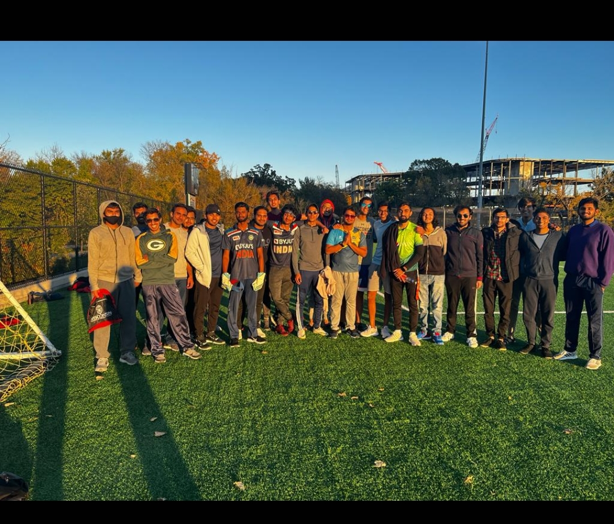

Cricket is played all over the world but it is the most popular game in Asia, England and Australia. Efforts are being done in such a way that, people in the US get to know more about the game too. Cricket is usually played in huge grounds with 11 members on each team. However, the real beauty of cricket is that it can be played by anyone, anywhere! All you really need is a bat and a ball and maybe something for wickets.
| INCIDENT | PICTURE |
|---|---|
| The best incident that I had while playing cricket was when students from India and Pakistan played matches together and had a lot of fun. Team India was the victor but it was a lot of fun anyhow. |  |
| I have been playing cricket since I was a kid and I was part of the state team in India when I was 15 years old but after that I was focusing more on my academics and the cricket became a hobby for me. I still continue to play cricket whenever possible along with my friends. |